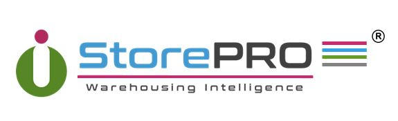
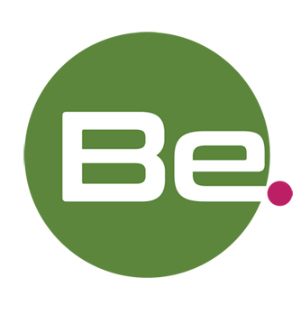

<mat-toolbar color="primary" class="app-navbar mat-elevation-z6">
  <div class="site-logo">
    <a [routerLink]="['/auth']">
      
      <div class="vl-blue" id="center"></div>
      
    </a>
  </div>
  <span class="spacer"></span>
  <a [routerLink]="['/auth/login/jp']" class="lang-link">日本語</a>
  <a [routerLink]="['/auth/login/en']" class="lang-link">English</a>
</mat-toolbar>
<main class="main">
  <router-outlet></router-outlet>
</main>